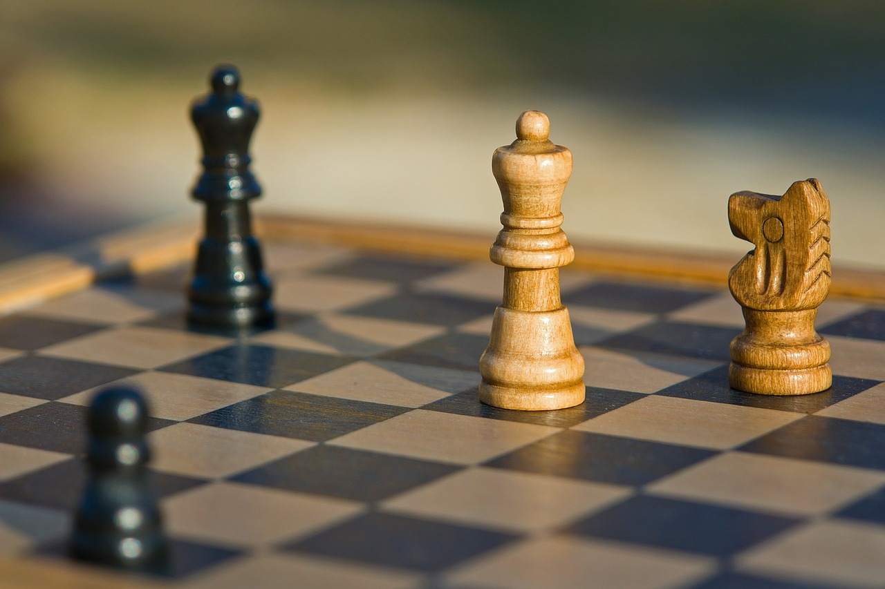

Conoce el juego que ha dado lugar a esta comunidad de jugadores que comparten una misma pasión
El ajedrez es un juego de tablero entre dos contrincantes en el que
cada uno dispone al inicio de dieciséis piezas móviles que se colocan
sobre un tablero dividido en sesenta y cuatro casillas. En su versión
de competición, está considerado como un deporte aunque en la
actualidad tiene claramente una dimensión social, educativa y
terapéutica
Se juega sobre un tablero cuadriculado de 8x8 casillas (también
llamadas escaques),alternadas en colores blanco y negro, que
constituyen las 64 posibles posiciones entre las que se mueven las
piezas durante el desarrollo del juego.
En una partida de ajedrez, las piezas suelen tener un valor dependiendo de una situación determinada. En primer lugar, las piezas tienen un valor estático fijado por su movilidad, es decir la cantidad de casillas a las que puede mover sin tener en cuenta la presencia de otras piezas en el tablero. La movilidad de las piezas suele ser mayor cuanto más cerca estén del centro del tablero, y menor si están en los bordes o las esquinas. Por ejemplo, un caballo en una esquina puede moverse a un máximo de dos casillas y en un borde puede ir a tres o cinco, mientras que su movilidad máxima es de ocho casillas, cuando está lejos de los bordes del tablero.
Se entiende por táctica ajedrecística, al conjunto de procedimientos, generalmente implicando una o unas pocas jugadas, por las que un jugador intenta ejecutar en el tablero una idea sencilla. El objetivo de una maniobra táctica es obtener algún tipo de ventaja, entre las cuales la más característica es ganar material. Por la forma en la que se mueven las piezas, surgen maniobras tácticas características. Por ejemplo, el caballo es capaz de atacar dos casillas alejadas entre sí y sin que importe el que haya muchas piezas alrededor. Eso favorece el que esa pieza pueda realizar con frecuencia ataques dobles (llamados también horquillas).
Se conoce como estrategia ajedrecística al conjunto de planes que realiza un jugador en una partida a medio o largo plazo. Las decisiones estratégicas pueden influir en el futuro de una partida durante muchas jugadas, o incluso en su totalidad. Un ejemplo típico de decisión estratégica es la de eliminar piezas con el fin de alcanzar un final de partida. Esto puede ser ventajoso en diversas ocasiones. Por ejemplo, si se tiene ventaja material, dicha ventaja suele ser más fácil de explotar cuanto menos piezas existan. Por otro lado, si el contrario tiene la iniciativa o incluso un fuerte ataque, cambiar piezas puede también contribuir a que dicha iniciativa o ataque se disipe. La decisión estratégica de gran alcance debo cambiar piezas debe entonces llevarse a la práctica por medios concretos, tácticos.
Este juego, tal como se conoce actualmente, surgió en Europa durante el siglo XV, como evolución del juego persa shatranj, que a su vez surgió a partir del más antiguo chaturanga,que se practicaba en la India en el siglo vi. La tradición de organizar competiciones de ajedrez empezó en el siglo xvi. El primer campeonato oficial del mundo de ajedrez se organizó en 1886. El ajedrez está considerado por el Comité Olímpico Internacional como un deporte, y las competiciones internacionales están reguladas por la FIDE. Los jugadores compiten a nivel individual en diferentes torneos, aunque también existen competiciones por equipos, siendo una de las más importantes las Olimpiadas de ajedrez.
El predecesor de todos los juegos de la familia del ajedrez, es decir, no solo del ajedrez europeo sino también del xiangqi, shōgi, janggi, o el makruk, surgió presumiblemente en la India septentrional como juego para cuatro. Este ajedrez primitivo se conocería como chaturanga en Persia y tras la conquista por los árabes continuaría desarrollándose siguiendo las expansiones islámicas.